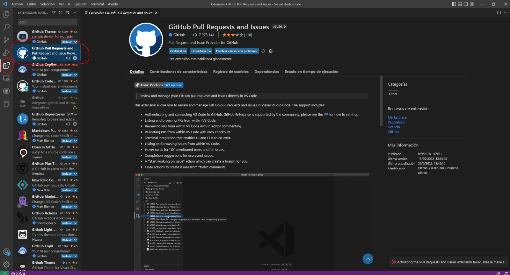
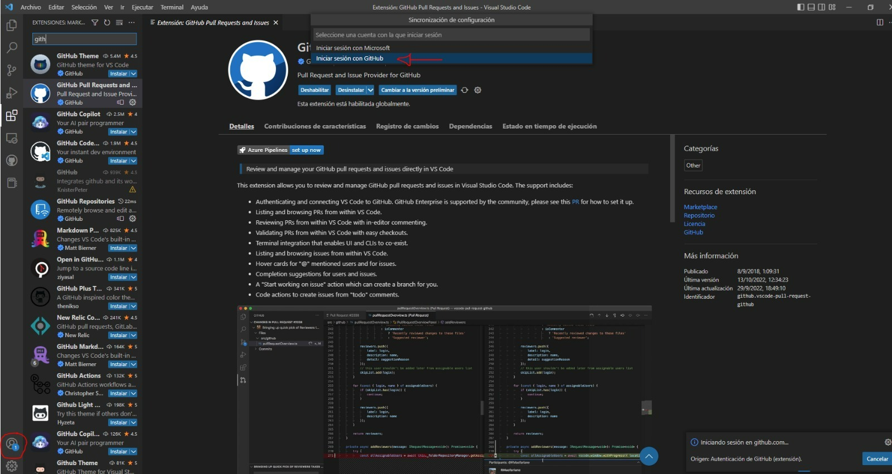
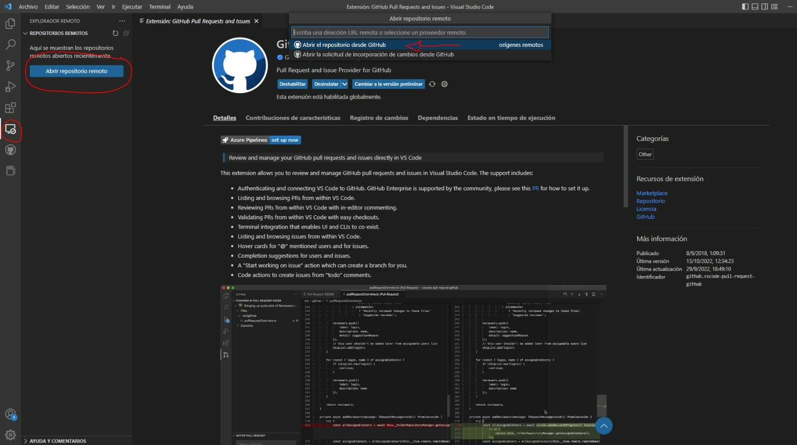
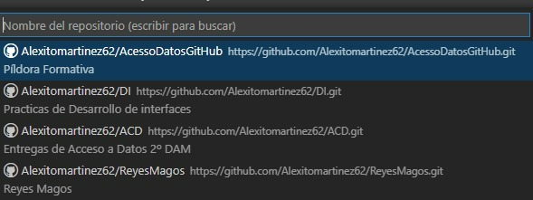
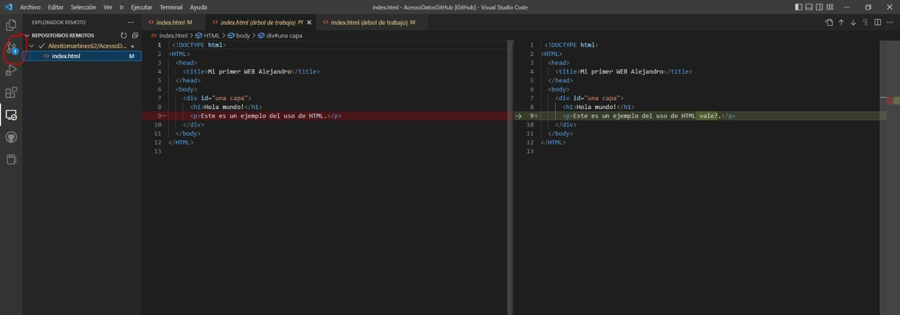
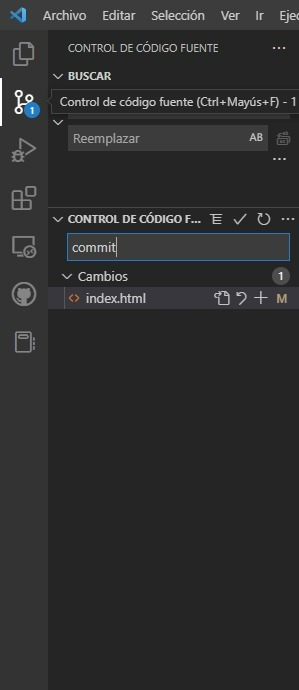
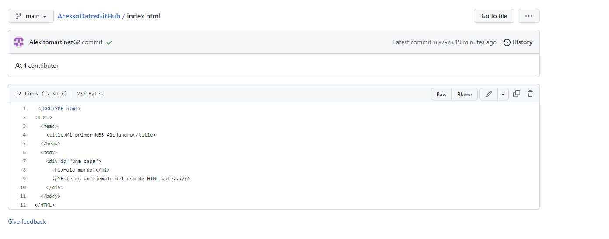
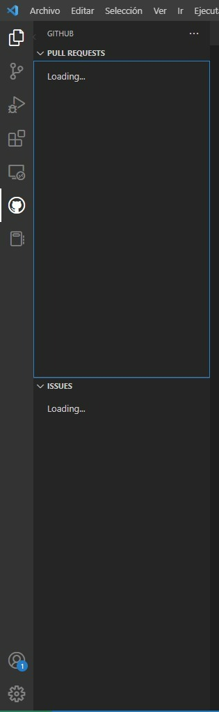

Github
1.En primer lugar, necesitaremos la extensión de GitHub Pull Request, que servirá de intermediario entre la web y el VS.
2.Una vez instalada la extensión se inicia sesión para tener vinculado tu cuenta de GitHub
3.Una vez tengamos todo iniciado, en este caso abriremos cualquier repositorio con nuestro Visual desde los repositorios
4.Elegimos el repositorio y se abrirá
5.Para guardar cualquier modificación realizada, guardaremos (Control + S) y acto seguido nos dirigimos al control de código fuente
6.Importante poner en el control de código fuente “commit” para que se guarden los cambios
7.Vamos a GitHub y observamos que todo está correcto, con los cambios guardados
8.Aparte, en el logo de GitHub podemos configurar Pull Requests y tambien Issues
Git

Es considerado como el rey más joven de los tres, ya que Melchor es el mayor y el más sabio, originario de Europa .